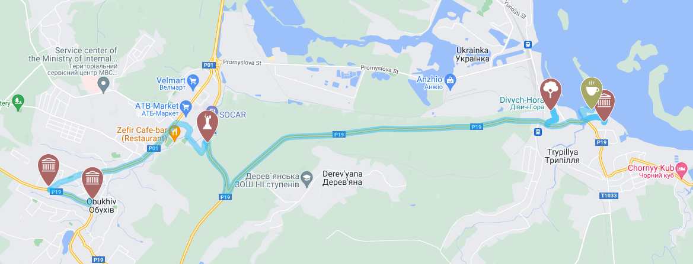

Структурований текст
Перший параграф
Другий параграф
© Daniel Bliznichenko
Назвати 5 мов програмування
- JavaScript
- Java
- C#
- C++
- Rust
Дайте вказівку файлу видалення в ОС Windows
- Відкрийте вікно Файлового провідника.
- Знайдіть файл, який потрібно видалити.
-
Виберіть файл і натисніть клавішу Delete або на вкладці Основне
стрічки натисніть кнопку Видалити.
Наведіть три або більше визначень в області фізики
- Абсолютно тверде тіло
-
тіло, яке ні за яких умов не деформується і за всіх умов відстань між
двома точками (або точніше між двома частинами) якого залишається
постійною. Існують й інші визначення абсолютно твердого тіла, одне з
яких стверджує таке.
- Амплітуда
-
найбільше відхилення величини, яка періодично змінюється від деякого
значення, умовно прийнятого за нульове.
- Вакуум
-
розріджений стан газу, тиск якого менший за атмосферний. Такий вакуум
ще називають частковим;
-
ідеалізована абстракція, простір, у якому зовсім немає речовини. Такий
вакуум називається ідеальним;
- Імпульс
-
міра механічного руху тіла, векторна величина, що для матеріальної
точки дорівнює добутку маси точки на її швидкість та має напрямок
швидкості.
3-и рівневий список
Гіперпосилання для лабораторної роботи №1
Лабораторна №1
Посилання до невпорядкованого списку
До невпорядкованого списку
© Daniel Bliznichenko
| 4 x 4 стіл |
|---|
| 1 |
2 |
3 |
4 |
| 5 |
6 |
7 |
8 |
| 9 |
10 |
11 |
12 |
| 13 |
14 |
15 |
16 |
© Daniel Bliznichenko

© Daniel Bliznichenko